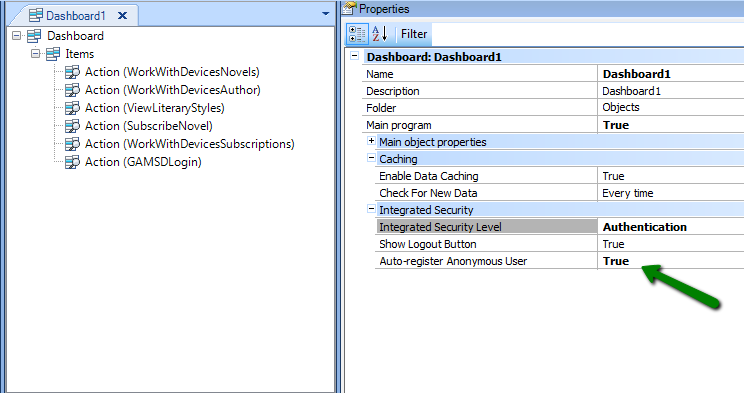
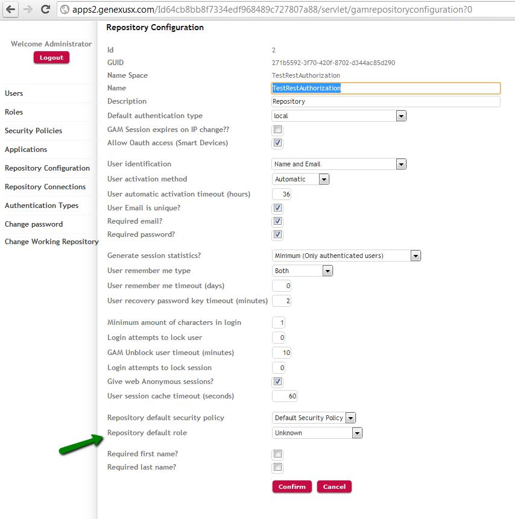
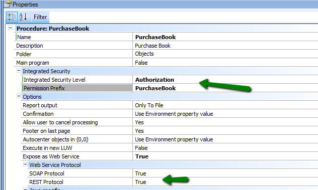
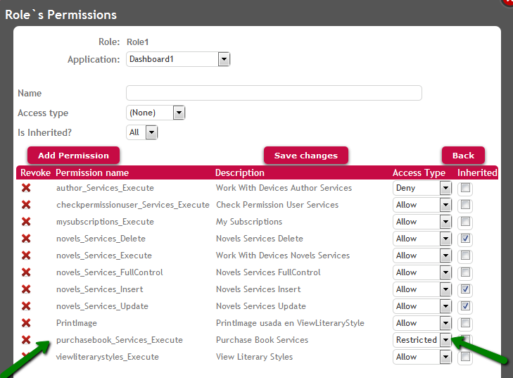

Using GAM when Auto-Register Anonymous User property has been set to True for a main SD object, the first thing it does for the first object called from this main object that requires authentication (the first object which has Integrated Security Level Property = Authentication or Authorization) is to try to authenticate as an anonymous user.
Thus, all the options included in the dashboard menu that require authentication give application users access as anonymous users.
The problem we want to solve here is what to do when a certain action requires the user to log in with a user account registered with GAM (different than the anonymous user).
Example of this scenario
The problem to solve
Below is a basic example that allows viewing the latest novels, authors and their published books, and literary styles of a certain bookshop.
To this end, a Main Dashboard is provided to define various Action Items that call each one of the objects that display the above information.
The purpose is that the application has security features, so the version settings include: Enable Integrated Security Property = True.
At the Main Dashboard level, the setting is as follows: Auto-Register Anonymous User property = True.

Figure 1.
With this option, authentication will be required to execute the dashboard, but since Auto-Register Anonymous User has been set to True the first thing it does is try to authenticate as an anonymous user.
Thus, all the options included in the dashboard menu that require authentication give application users access as anonymous users.
Suppose now that a certain action in the application requires users to be authenticated with a user account other than anonymous. In the example, suppose that the user wants to buy a book.
Note also that the login option can be added to the dashboard for those users who want to access the application by entering their credentials. The code associated with the GAMSDLogin action of the dashboard is as follows:
Event 'GAMSDLogin'
GAMSDLogin2()
EndEvent
Solutions
Let’s see two possible solutions for the same problem.
1. One solution may be to use Permissions.
The auto-registered user in Smart Devices applications is automatically given the following Roles (in the precedence explained below):
-
All the Roles given to "Anonymous" user. See Figure 2.

Figure 2. Roles given to Anonymous user.
Note that the "Anonymous" user is the same for web and SD applications.
-
If no role is given to Anonymous user, the Default Role of the Repository is given to him. See Figure 3.

Figure 3. Setting the Repository Default Role using GAM Web Backoffice
As a consequence, if the application handles Permissions (Integrated Security Level Property = Authorization), and the GAM Application is configured to check permissions (the Require Access Permissions Application Property of the Application is checked using GAM Web Backoffice) the actions allowed for the anonymous user can be differentiated from those that are forbidden by assigning permissions to the roles explained above.
For example, for the user to be able to subscribe or order a book, he must be identified so we will give him a permission limited to the action "Buy a book".
Note that in our example this action is associated with the permission of a REST Web Services that performs the operation. Below is the code of the action “Buy a book”.
Event 'PurchaseBook'
PurchaseBook.Call(&sdtLiteraryStyle.CurrentItem.NovelId)
EndEvent

Figure 4. PurchaseBook procedure requires "PurchaseBook" permission to be executed.
In this example, the "PurchaseBook" permission must be restricted to the role given to the Anonymous user, as shown in figure 5. If the role given to Anonymous User is "Role1", the "PurchaseBook" permission is restricted in that role. See HowTo: Adding a Permission to a Role for details.

Figure 5. Permissions given to Anonymous User role.
2. Another option that can be used if you don’t want to handle permissions is to program redirecting users to the login page in this way:
Event 'PurchaseBook'
Composite
&objectInfo = CheckPermissionUser(&sdtLiteraryStyle.CurrentItem.NovelId)
call(&objectInfo)
EndComposite
EndEvent
The CheckPermissionUser Procedure checks if the user is Anonymous or not, and loads a variable with the name of the program to be called accordingly. If the user is Anonymous, the login will be called, otherwise the PurchaseBook procedure will be called. In this example we perform a dynamic call.
CheckPermissionUser Procedure:
if not &GAMSession.IsAnonymous
&objectInfo = "prc:PurchaseBook?"+&NovelId.ToString().Trim()
else
&objectInfo = "sd:Gamsdlogin2"
endif
An alternative code:
Event 'PurchaseBook'
Composite
&isAnonymous = IsAnonymous() //call a procedure which returns a boolean variable
if &isAnonymous
GAMSDLogin2.Call()
&isAnonymous = IsAnonymous()
if not &isAnonymous
MySDPanel.Call()
endif
else
MySDPanel.Call()
endif
EndComposite
EndEvent
See Dynamic Calls in Smart Devices for details of the CheckPermissionUser procedure logic.
See also
Auto-Register Anonymous User property
|